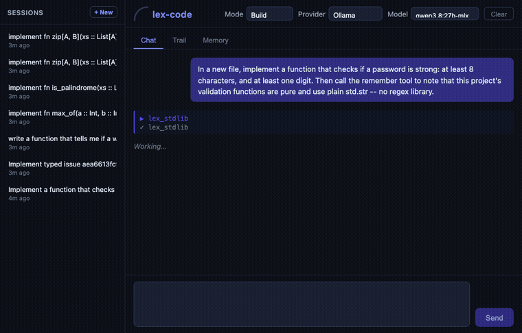

An experiment in verified AI coding.
Not something to switch to tomorrow — a real look at whether "trust the result, not the diff" actually works. Point it at a task in plain English; it writes real Lex and closes the turn against the type checker and a declared acceptance, not a transcript claiming success. Built first in Lex — a language with no users but us — because you can't fake out a type checker.
A real, unedited run — the request is plain English, not Lex. No signature, no syntax, no prior Lex knowledge.
Why lex-code
A result you don't have to trust
Hand it a typed issue instead of a paragraph of prose: it iterates against the type checker and the issue's own acceptance examples, and the run ends with one machine-readable line regardless of what the model claims.
The sandbox is the language
Every session runs under an explicit capability grant enforced by the Lex VM itself — it can't perform an effect it wasn't granted, full stop, not "was told not to."
An outer sandbox, one flag away
--lex-os runs
the whole session inside lex-os's host-level mediated perimeter — a real microVM on a
KVM host, stacked on top of the language-level grant.
Fully local is a first-class option
--ollama
runs entirely on your own machine, no key, no cloud dependency — the same workflow as
every other provider.
It dogfoods its own guarantees
lex-code is written entirely in Lex, so its own CI runs the same type checker, minimum-bar gate, and effect-row report against itself that it holds any task to.
Delegate it from any agent
A plain CLI — any agent that can shell out (Claude Code, Codex, a CI step) can hand it a Lex-specific task. A packaged, portable skill is in the repo, ready to install.
What's a typed issue?
Work as a declared, checkable contract instead of a paragraph of prose — an API shape and the examples that prove it, the acceptance a run either closes against or doesn't. Real output, the same issue used in "Try it" below:
$ lex issue show aea6613fc9e96953bb1c89fb3c45ac7200f62a379acdee2a47e29bab4c938ced
{
"acceptance": {
"api": [
{ "kind": "added", "name": "zip",
"signature": "(xs :: List[A], ys :: List[B]) -> List[(A, B)]" }
],
"examples": [ "zip([1,2],[\"a\",\"b\"]) => [(1,\"a\"),(2,\"b\")]" ],
"shape": "typed_delta"
},
"created_at": 1790252464,
"issue_id": "aea6613fc9e96953bb1c89fb3c45ac7200f62a379acdee2a47e29bab4c938ced",
"title": "add zip"
}
Issues live in Lex's own op-log VCS: every accepted change is a content-addressed,
hash-chained op, and lex issue verify checks the acceptance against HEAD, not a
cached memory of it — which is why the same verdict can flip if the code it once verified is
later removed. Honestly: there's no web UI for any of this yet, just the CLI. Real, truncated
output from this repo:
$ lex op log op_id: 188906eedb0952d086826165b6e49148485936d9deb9b1155f1e349f9cadc019 kind: modify_body parent: 021e626a7699e6940565cd7e2aa8b4a53e137d220327b6ed1e9e3f129fdae57c op_id: 021e626a7699e6940565cd7e2aa8b4a53e137d220327b6ed1e9e3f129fdae57c kind: add_function parent: c32da6062f16626dc4d5e5e84783ca642d92f7cb8d0879a1dfd767614de760b0 ...
Try it
Fully local, no key:
lex-code --ollama "implement fn zip[A, B](xs :: List[A], ys :: List[B]) -> List[(A, B)]"
That's fine for a quick edit you'll read yourself — see the hero recording above for what that looks like live. For a result you can act on without reading the diff, hand it a typed issue instead — it closes by proof, not by a transcript claiming success:
ISSUE_ID=$(lex issue create --title "add zip" --shape typed_delta \ --api 'zip:(xs :: List[A], ys :: List[B]) -> List[(A, B)]' \ --example 'zip([1,2],["a","b"]) => [(1,"a"),(2,"b")]') lex-code "--issue=$ISSUE_ID" --ollama > /tmp/lex-code.log 2>&1 grep '^\[ISSUE_VERDICT\]' /tmp/lex-code.log # [ISSUE_VERDICT] verified <issue_id>
The typed-issue flow above, live and unedited — same issue,
same run, ending in the same verified line.
Both commands above are copy-paste real — run verbatim against this repo
before shipping this page, closing verified.
No key, no waitlist, no account: the install script above sets up the Lex toolchain too if you don't already have it, then you're running a real session in under a minute.
Full reference, every mode (--plan, --explore,
--refactor, --test, --review,
--verify, --bar, --multi), the web UI, and the
typed-issue workflow in depth: the
README.

Prefer a UI: the same kind of session, with its live Trail — and Memory, once something's worth remembering across sessions, right in the sidebar.
Where this fits alongside what you already use
Not an alternative to Cursor, Copilot, or Claude Code — it only writes Lex, a language you don't use, so it isn't trying to be your daily driver. What's worth naming is the confidence signal it's testing, demonstrated above rather than argued about in the abstract.
A different confidence signal
An editor assistant's turn
ends when the model says it's done and the diff looks right to you. lex-code's ends when
lex check passes and a declared acceptance does too — a result you can act
on without reading the diff, not a transcript claiming success.
An enforced sandbox, not a polite one
An editor assistant runs with whatever access your editor has. lex-code's capability grant is enforced by the Lex VM itself — an effect it wasn't granted, it cannot perform, full stop, not "was told not to."
Not a competing IDE
It isn't trying to replace your daily driver. It's a plain CLI any agent — Cursor, Claude Code, Codex, a CI step — can shell out to specifically for Lex, the one thing it holds to a stricter bar than "the diff looks plausible."
Providers
Ollama
Fully local, no key. Default model qwen3.8:27b-mlx.
lex-code --ollama "..."
OpenCode Go plan
Cloud access to several open-weight coding models behind one subscription key.
export OPENCODE_API_KEY=...
lex-code --opencode "..."